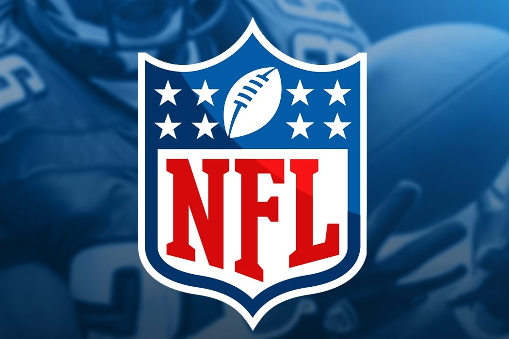

Futbol Americano
Historia
El futbol americano nació hace más de cien años en EE.UU. derivado del rugby inglés. Es uno de los deportes de contacto más competitivos de los EE.UU. y que se practica actualmente en más de sesenta países.
La mayor manifestación competitiva y mediática de este deporte se da en la National Football League (NFL), la liga de fútbol americano profesional de Estados Unidos. El fútbol americano universitario, que se practica a nivel amateur en todo el país, también goza de gran popularidad. La popularidad del fútbol universitario creció hasta convertirse en la versión dominante de este deporte en la primera mitad del siglo XX. Los tazones (bowls), una tradición del fútbol practicado en los colegios universitarios, atrajeron una audiencia nacional en Estados Unidos para los equipos colegiales. Reforzado por feroces rivalidades, el fútbol colegial aún mantiene un atractivo general muy notable dentro de Estados Unidos.
En 1920 se constituye la American Professional Football Association. La liga cambió después su nombre por el actual, la National Football League, dos años después, para convertirse en la liga profesional de más influencia en el fútbol americano y ser considerada la liga deportiva más lucrativa del mundo. Después de haber comenzado en las ciudades industriales del Medio Oeste de Estados Unidos, el fútbol americano se ha convertido en un fenómeno mediático no solo en Estados Unidos.
La liga rival de la NFL, la American Football League (AFL), se comenzó a jugar en 1960. La competencia que representaba esta nueva competición llevó a una fusión entre ambas ligas en 1970 y al surgimiento de un campeonato unificado, en el que las antiguas ligas separadas pasaban a ser sendas Conferencias (Nacional y Americana respectivamente) de la nueva NFL, y cuyos campeones se enfrentan en una final llamada Super Bowl, la cual se ha convertido en el evento deportivo más visto a nivel global, con cifras que aumentan de año en año
|  |
|---|
| Logo Oficial de la National Football League |
Reglas
El fútbol americano es jugado por dos equipos, que forman de 11 jugadores ofensivos de un lado y 11 defensivos del otro equipo. El equipo atacante intenta llevar el balón bien mediante carrera o mediante un pase, hacia la zona de anotación y así anotar puntos. La defensa tiene que evitar que esto ocurra y tratar de impedir el avance del equipo rival hacia la anotación.
El juego consiste en que la escuadra ofensiva logre un touchdown la forma básica de anotación, con valor de 6 puntos, más 1 de point after si se realiza mediante chut entre palos field goal, o 2 puntos si se realiza mediante jugada— como objetivo principal, o bien un field goal, con valor de 3 puntos. Para hacerlo, deben avanzar al menos diez yarda en un máximo de cuatro oportunidades o downs. Así, por cada diez yardas recorridas como mínimo, se tiene derecho a otras cuatro oportunidades para buscar el mismo objetivo de diez yardas, y así sucesivamente hasta llevar o acercar el ovoide a la zona final del campo del equipo rival y lograr la anotación.
Posiciones
Jugadores de Ofensiva
- Quarterback (QB)
- Offensive Tackle (OT); Guard (G); Center (C)
- Running Back (RB)
- Halfback (HB)
- Fullback (FB)
- Wide Receiver (WR)
- Tight End (TE)
Jugadores de Defensiva
- Defensive End (DE); Defensive Tackle (DT)
- Linebackers (LB)
- Cornerbacks (CB)
- Safeties (S)